La Marque, Texas • August 28, 2026 • 8:31 PM
That's how long it took for a drive home to become a burning car with our son trapped inside. It's also about how long it took for strangers to decide he was worth running toward. This page is our family's thank you to Ben Keith and everyone who stopped that night.
A live counter tied to the moment the crash alert hit Jesica's phone. Every second on it exists because strangers ran toward a fire.
Two videos: the night itself, told by Jeremiah, and the night Ben was recognized for it.
Footage from the scene, the wreck, the hospital, and the ceremony. 2:38, captioned.
Ben Keith presented the award in front of the community, with Cooper standing next to him.
Cooper never saw it coming. Neither did anyone else.
Cooper was driving back from donating plasma when he lost consciousness at the wheel. The car left the road, rolled, and caught fire. The safety systems that are supposed to protect you held him in place, and he couldn't get himself out.
Ben Keith was getting into his own car nearby when dirt, mud, and pieces of a vehicle showered him. Instead of backing away from a burning car, he ran at it, pulled Cooper out, carried him behind a dumpster in case it blew, and shielded him.
Jesica and Jeremiah got the crash alert, jumped in the car, and realized halfway there that the fire trucks were heading the opposite direction. They turned around and followed them in. Right before they pulled up, a woman called Jesica's phone to say he'd been pulled out.
Cooper spent that night in the ICU and four days in the hospital with a broken back, sternum, and ribs. He's home now, healing. When he came to, one of the first things he asked was whether anyone got the names of the people who helped him.
"Hey man, where are you at?" He should have been almost home. Something felt off before anything had happened.
Her phone reports an accident. By this point the car is on fire, Cooper is screaming for help, and Ben Keith is already moving.
Grabbing whatever they could. Get in, get in the car. Jesica dialing Cooper's phone over and over. No answer.
Cooper is out of the car and behind cover, surrounded by people who had never met him and refused to leave. Seven minutes. He was never alone for any of them.
Broken back, sternum, and ribs. Awake and asking for names.
Ben is recognized in front of the community. Cooper stands next to him for it.
Satellite view of the stretch of road, marked up by Jeremiah. The car left the road, ran along the shoulder between the road and the businesses, passed Dillon Donuts, and came to rest by the hay bales at Joe's Country Store. That's the same stack of bales you can see behind the fire in the video.
A close-up diagram with the fire truck and ambulance positions is coming; tap the map to open it full size.
They thought they were stopping at an accident. To us they're the reason we still have him.
Got showered with debris while getting into his car, ran toward the fire, pulled Cooper from the wreck, carried him behind a dumpster in case it blew, and stayed. Weeks later he was presented the Community Lifesaver Award, with Cooper standing next to him.
Kept Cooper calm and covered on the ground, and made sure he was not alone for a single minute until his mom got there.
Right before Jesica and Jeremiah pulled up, she called to say Cooper had been pulled out. That was the first breath either of them had taken.
The people who called 911, held a light, waved traffic off, or just stood close. If that was you, or you know who it was, we want your name. Not for anything but to say it back to you.
Frames from the night, pulled from the video. Tap any photo to open it.
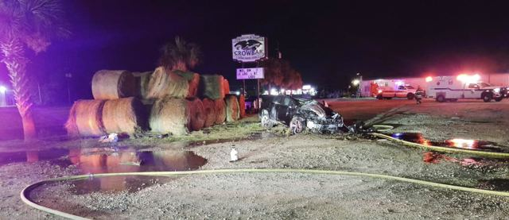
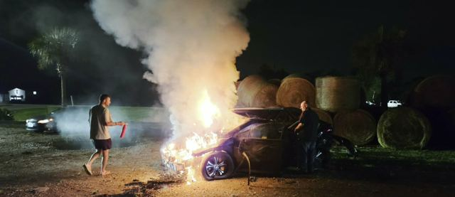
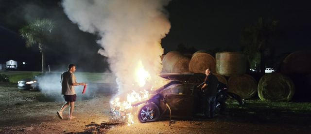
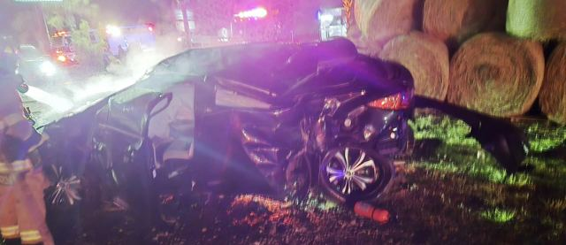
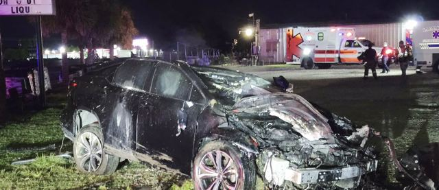
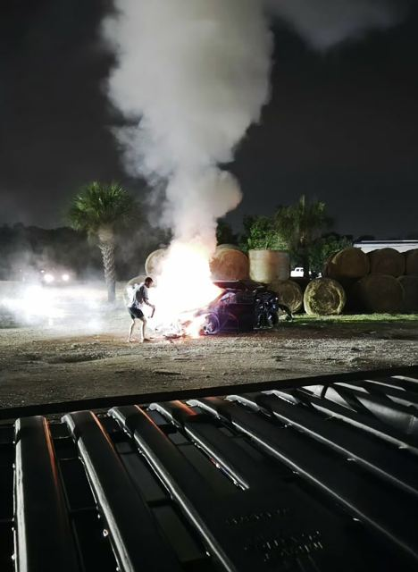
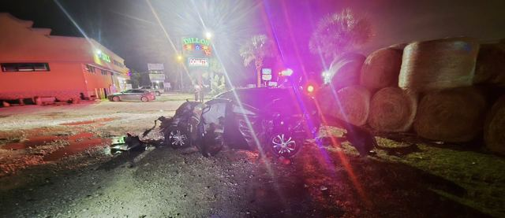
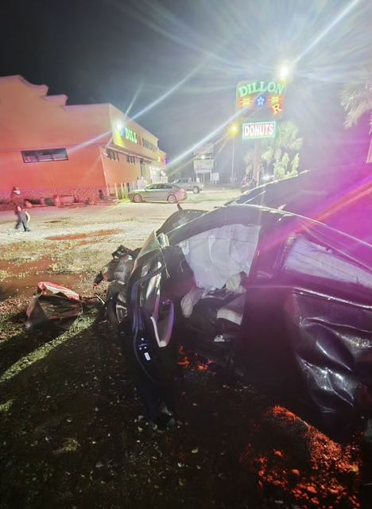
The next morning, in daylight. Nobody drives away from this on their own.
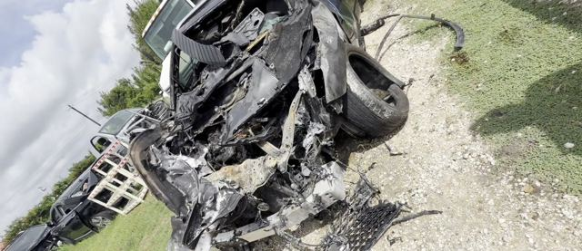
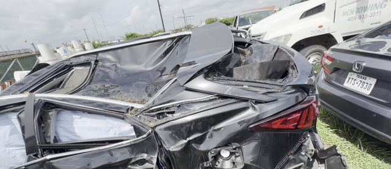
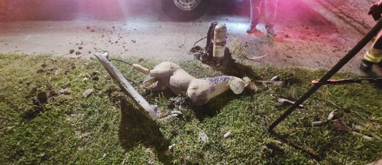
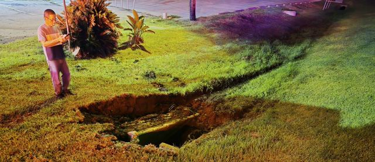
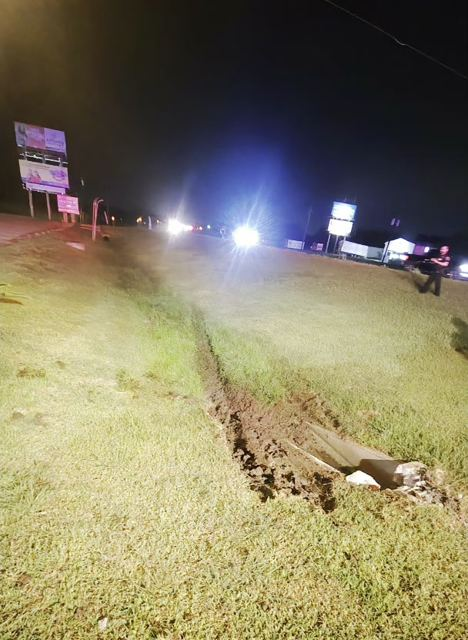
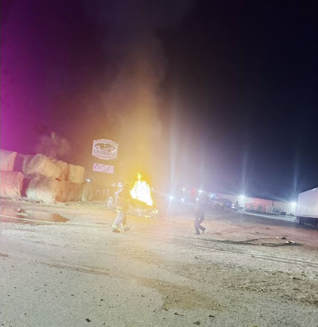
Cooper awake, Ben telling it, and the night La Marque said thank you out loud.
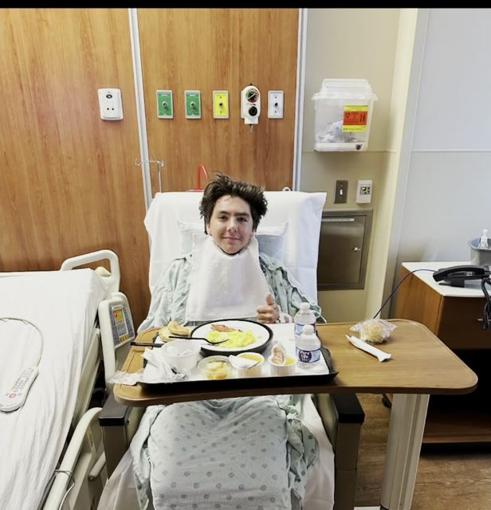
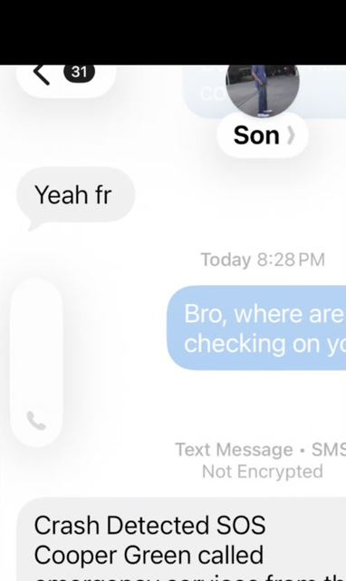
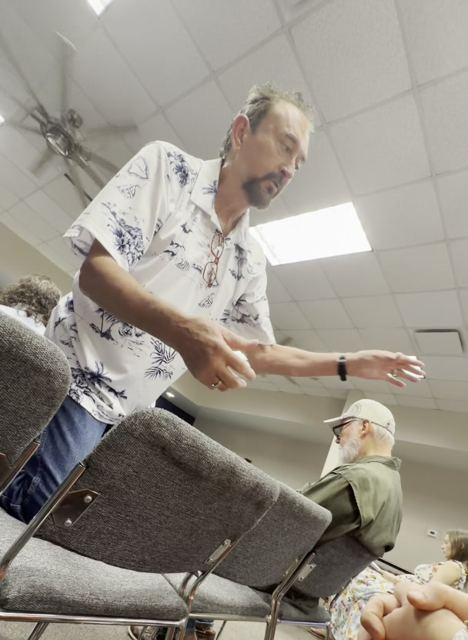
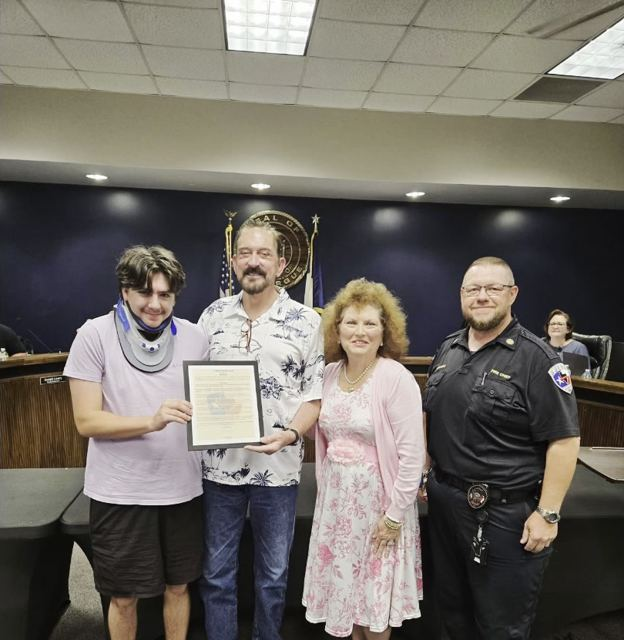
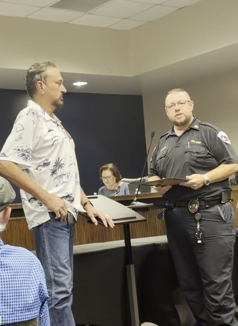
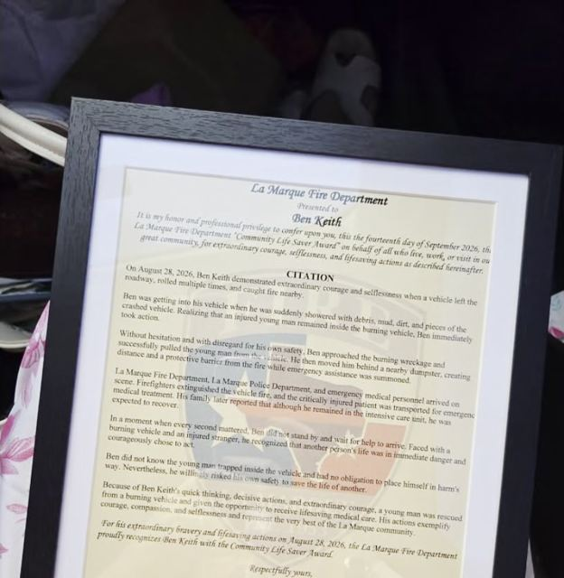
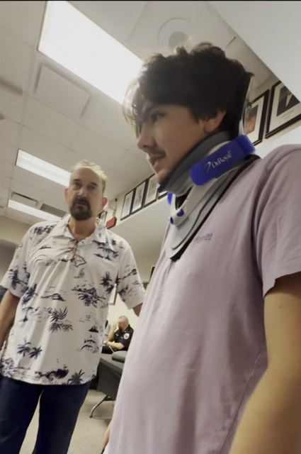
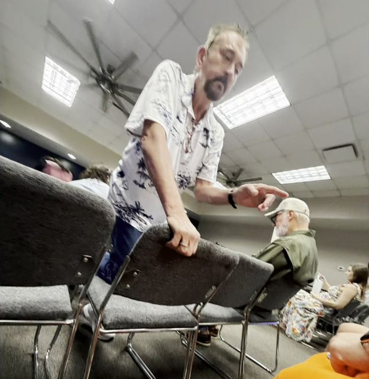
What I said in the video, written down.
I want to take a minute out and thank a man named Ben Keith.
On August 28th, Jesica and I got an emergency alert from Cooper's phone: Crash Detected. The next two to three minutes were pure panic. Grabbing whatever we could. Get in, get in the car. Jesica dialing Cooper's phone over and over and over again. No answer.
Then we realized the fire trucks were going the other way. So we turned around and pulled in with the fire trucks on scene. Right before we did, a woman called Jesica's phone and told us he'd been pulled out. That was the first breath either of us had taken.
He was trapped inside and couldn't get himself out. Ben Keith was right there. Debris from the crash rained down on him, and instead of backing away from a burning car, that man ran to it, pulled Cooper out, carried him behind the dumpster, and shielded him in case the car blew.
I knew before I even knew what he had done. He had that look of someone who just did God's work. No smile, no tears. Sitting right alongside the trauma. He was whole because he acted the way a man should.
Cooper spent four days in the hospital with a broken back, sternum, and ribs. He's home now, healing. When he woke up in the ICU he told his mom: find those people. Those people saved my life.
Ben, you've got a family in all of us, for life. To the woman who stayed with Cooper and called us, to Kristen Snook and her husband, and to every stranger who stood by him until his mama got there: this community showed us who it was that night.
Hug your people tighter tonight. And if the moment ever comes, be a Ben Keith.
Transcribed from the video and lightly cleaned up for reading.
Three letters. One still being written.
Ben, I'm Cooper's stepdad. There's no way to properly thank someone for running toward a burning car, but I'm going to try anyway. You didn't hesitate. You got him out, got him behind cover, and stayed until his mom could get there. When Cooper woke up, the first thing he wanted was the names of the people who helped him, so he could thank them himself. He'll get that chance. But I wanted you to hear it from me first. Our family owes you more than we can say.
To everyone who ran toward the danger, stayed with Cooper, called me, prayed for him, checked on us, or simply cared enough to reach out: there will never be words big enough for what you have done for our family. You gave me my son back. Hug your people a little tighter tonight. Life can change in three minutes.
Cooper's own thank you goes here, in his words, when he's ready to write it.
{kind=link}
{kind=link}
{kind=link}
{kind=link}
{kind=link}
{kind=link}
{kind=link}
{kind=link}
{kind=link}
{kind=link}
{kind=link}
{kind=link}
{kind=link}
{kind=link}
{kind=link}
{kind=link}
{kind=link}
{kind=link}
{kind=link}
{kind=link}
{kind=link}
{kind=link}
{kind=link}
{kind=link}
{kind=link}